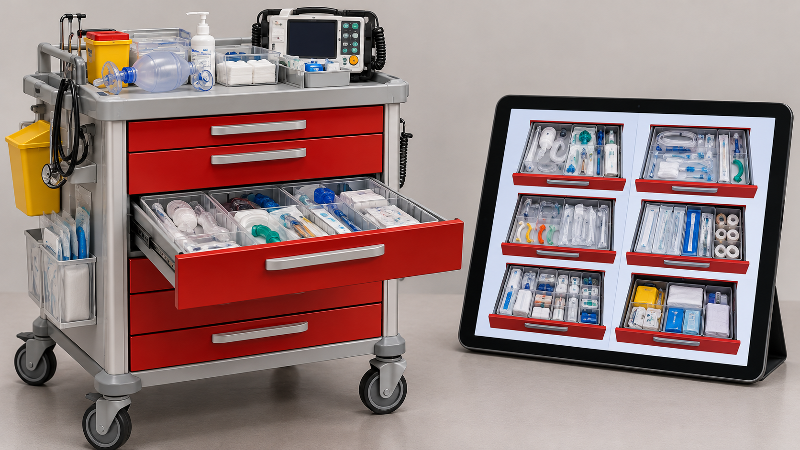
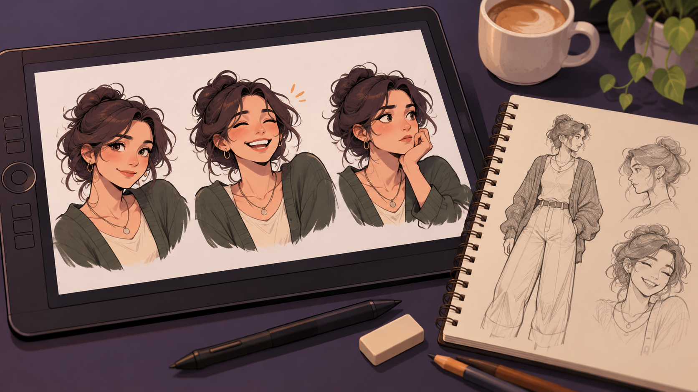
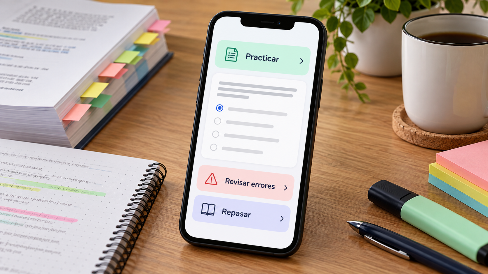
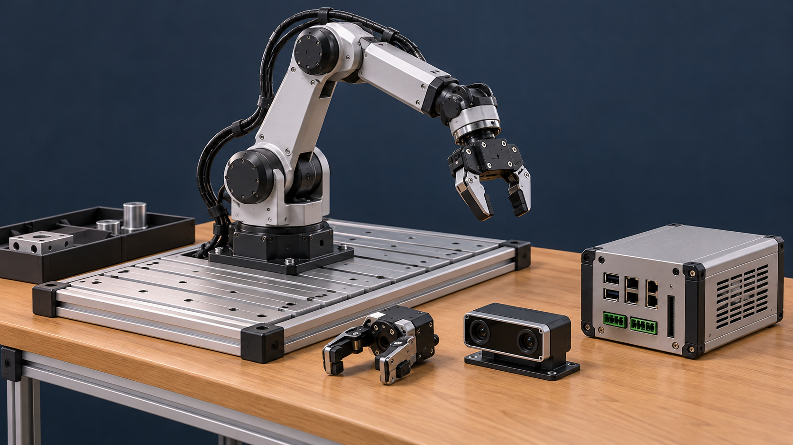
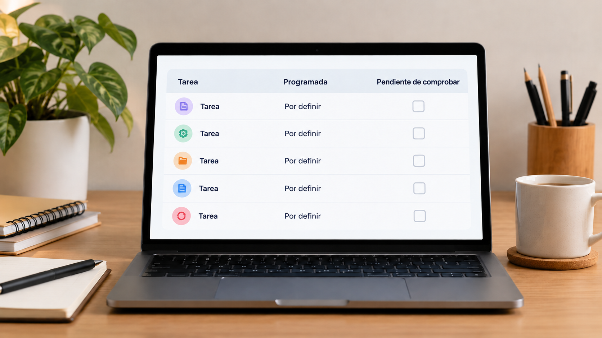
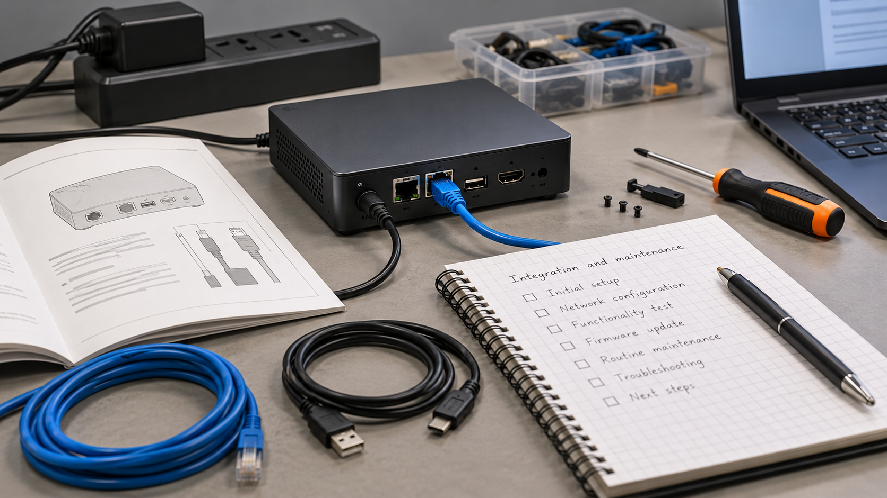
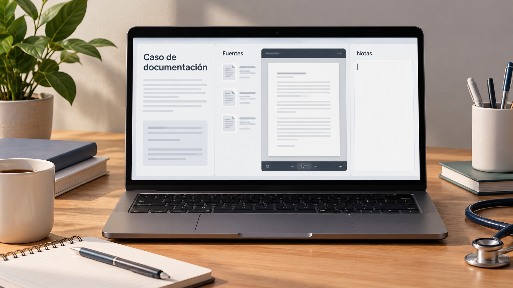
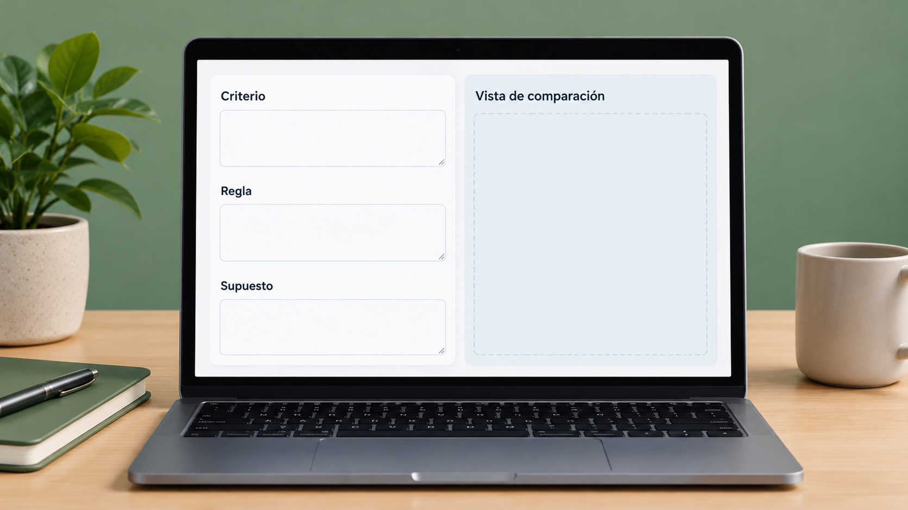
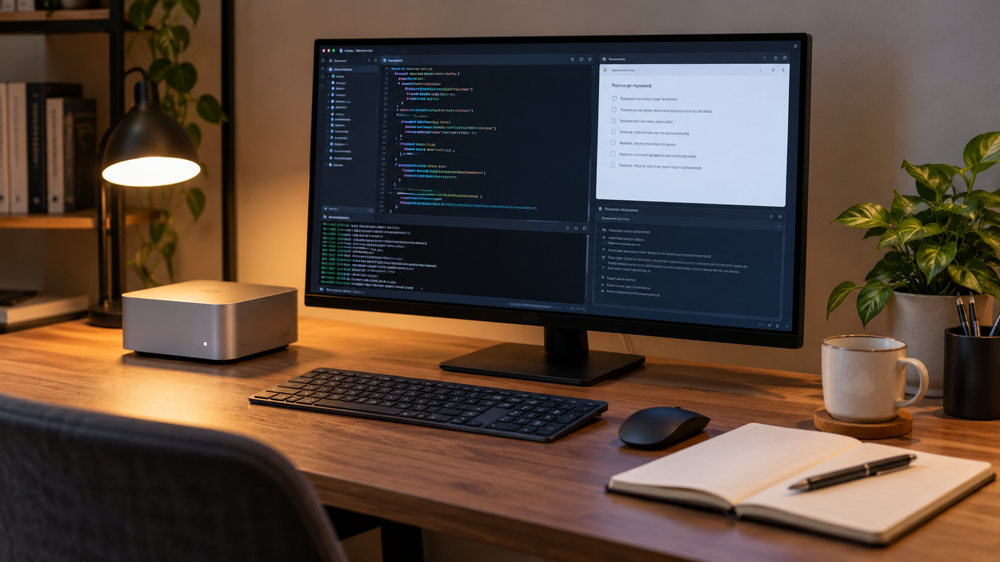
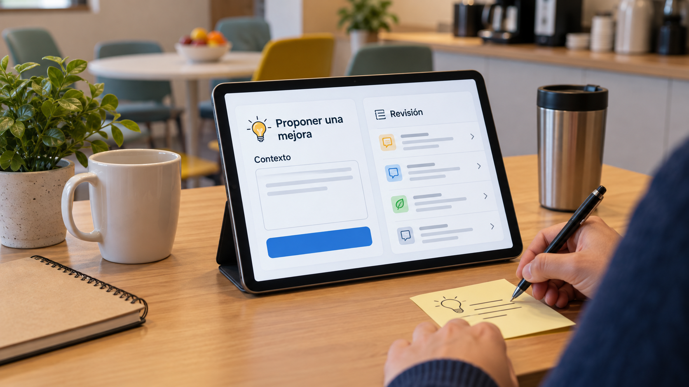

Javier · Novus Motus · Borrador local
Ideas que se pueden recorrer
82 proyectos, investigaciones y propuestas en nueve ámbitos. Cada imagen permite imaginar el proyecto; el TL;DR cuenta mi aportación, el trabajo existente y lo que queda por comprobar.
Leer el portfolio completo en PDF
82 proyectos
ClínicosAuditoría de flujos clínicos y condiciones de un servicio acotado
Ilustración conceptual generada con IA; no es una captura ni prueba de uso.Leer el TL;DR
- Propósito: Explorar un servicio acotado de análisis de procesos clínicos.
- Aportación y enfoque: Javier expresa interés prioritario y en factores humanos; etapas y métodos concretos de esta ficha son propuestas del asistente.
- Trabajo y evidencia: Catálogo recibido que resume ese interés, sin transcripción completa ni automatización probada.
- Resultados y límites: No se acredita auditoría ejecutada, servicio contratado o aplicación validada de SEIPS. Falta definir encargo, permisos, recogida de evidencia y comprobación con responsables.
Casos sintéticos y preguntas tipadas para estudiar decisiones clínicas
Ilustración conceptual generada con IA; no es una captura ni prueba de uso.Leer el TL;DR
- Propósito: Estudiar preguntas clínicas delimitadas mediante casos sintéticos y respuestas tipadas.
- Aportación y enfoque: Javier plantea la pregunta y el catálogo; la elaboración de material usa asistencia de IA.
- Trabajo y evidencia: README y piloto de cincuenta casos febriles inventados, atribuidos a Claude sin modelo exacto confirmado.
- Resultados y límites: Pendientes de revisión por especialista y no adecuados aún para evaluación o calibración. No se acredita entrenamiento ni rendimiento clínico.
Chiarezza y la comprensión de información clínica
Ilustración conceptual generada con IA; no es una captura ni prueba de uso.Leer el TL;DR
- Propósito: Ayudar a pacientes a comprender un informe conservando su significado e incertidumbre.
- Aportación y enfoque: Javier define el propósito y los límites: explicar el contenido, sin añadir interpretaciones clínicas; desarrollo asistido por IA.
- Trabajo y evidencia: Prototipo y registro de pruebas con tres informes inventados y una fotografía simulada.
- Resultados y límites: Se observaron errores semánticos que el filtro no detectó. Falta evaluar fidelidad, comprensión y seguridad; no hay validación con pacientes.
Consulta de ubicación y reposición de material hospitalario
Ilustración conceptual generada con IA; no es una captura ni prueba de uso.Leer el TL;DR
- Propósito: Ayudar a localizar material hospitalario y comprender su reposición.
- Aportación y enfoque: Javier distingue esta propuesta del carro de paradas; el diseño separaría consulta de ubicación y registro de stock.
- Trabajo y evidencia: Material preparatorio y necesidad recogida en la propuesta institucional; no se localizó aplicación independiente en el árbol revisado.
- Resultados y límites: No se acredita implantación. Falta confirmar ubicaciones, existencias, caducidades y responsabilidades; la ausencia local no prueba ausencia en otros entornos.
Interfaz clínica e integración de información entre niveles asistenciales
Ilustración conceptual generada con IA; no es una captura ni prueba de uso.Leer el TL;DR
- Propósito: Examinar navegación y transferencia de información entre niveles asistenciales.
- Aportación y enfoque: Javier plantea diseñar con profesionales, preservar servicios aprovechables y exigir pruebas de integración, más allá del aspecto de las pantallas.
- Trabajo y evidencia: Estudio, propuesta formal y presentación; sin acceso a historias clínicas en esta preparación.
- Resultados y límites: No hay aprobación, financiación ni integración acreditadas. Falta demostrar interoperabilidad y sustitución independiente de componentes.
Investigación de una barrera para proteger curas sacras
Ilustración conceptual generada con IA; no es una captura ni prueba de uso.Leer el TL;DR
- Propósito: Investigar si existe o podría fabricarse una barrera que proteja curas sacras de contaminación fecal.
- Aportación y enfoque: Javier formula la idea y la pregunta de fabricación; no constan material, geometría o modo de uso elegidos.
- Trabajo y evidencia: Catálogo con referencia a una investigación anterior, cuya respuesta completa no se recuperó.
- Resultados y límites: No hay diseño, prototipo, ensayo ni novedad patentable acreditados. Falta recuperar comparadores y evaluar efectos y condiciones sin inventar conclusiones clínicas.
Organización de evidencia para análisis retrospectivo de documentación clínica
Ilustración conceptual generada con IA; no es una captura ni prueba de uso.Leer el TL;DR
- Propósito: Organizar evidencia documental para un análisis clínico retrospectivo.
- Aportación y enfoque: El diseño separa análisis, documentación y revisión. El material no permite atribuir todas las decisiones o descartes a Javier.
- Trabajo y evidencia: Prompts y definiciones de funciones, leídos sin ejecutarlos en expedientes.
- Resultados y límites: No es una auditoría realizada ni un servicio operativo. Afirmaciones de error cero o clasificación regulatoria no están validadas; falta comprobar trazabilidad y límites de interpretación.
Orientación accesible dentro de un hospital
Ilustración conceptual generada con IA; no es una captura ni prueba de uso.Leer el TL;DR
- Propósito: Facilitar recorridos comprensibles y accesibles dentro de un hospital.
- Aportación y enfoque: Javier separa orientación, carro y almacén; la ficha propone comparar mapa, visita y guía por pasos según la tarea.
- Trabajo y evidencia: Necesidad recogida en una propuesta institucional, sin guía implementada localizada.
- Resultados y límites: No se acreditan mapas validados ni uso con pacientes. Falta comprobar destinos, obras, accesos y actualización; la demo urbana no es implantación hospitalaria.
Participación profesional en la evaluación de mejoras y uso de IA
Ilustración conceptual generada con IA; no es una captura ni prueba de uso.Leer el TL;DR
- Propósito: Dar un cauce a propuestas de mejora de profesionales de distintos ámbitos.
- Aportación y enfoque: Javier propone comisión de IA y comité de intraemprendimiento complementarios, incluyendo mejoras que no necesiten IA.
- Trabajo y evidencia: Borradores, presentaciones y propuesta de piloto de doce meses.
- Resultados y límites: No son una comisión constituida ni un nombramiento. Quedan por acordar funciones, evaluación, recursos y seguimiento; no hay efectos institucionales medidos.
Redes sociales y tecnologías digitales en salud en el TFM de 2021
Ilustración conceptual generada con IA; no es una captura ni prueba de uso.Leer el TL;DR
- Propósito: Explorar tecnologías digitales, redes sociales y continuidad de información clínica en un trabajo de 2021.
- Aportación y enfoque: El antecedente propone información compartida y almacenamiento distribuido; la revisión actual distingue esa propuesta de una arquitectura ya validada.
- Trabajo y evidencia: TFM original recuperado y texto examinado, sin modificarlo.
- Resultados y límites: Es trabajo académico conceptual, no un sistema implantado. No se acredita eficacia asistencial ni se realiza aquí una evaluación académica integral.
Representación digital del carro de paradas para consulta y práctica

Ilustración conceptual generada con IA; no es una captura ni prueba de uso.Leer el TL;DR
- Propósito: Consultar y practicar la ubicación del material de un carro de paradas.
- Aportación y enfoque: Javier delimita la experiencia formativa y las particularidades que conoce; IA y herramientas ayudan a representarlas.
- Trabajo y evidencia: Maqueta, catálogo y actividades descritos en el README; una referencia procede de un protocolo de 2008.
- Resultados y límites: Fichas no equivalen a existencias físicas. Falta confirmar vigencia, disposición y derechos de recursos; no se acredita implantación ni competencia clínica.
SmartHandover y la continuidad de información entre turnos
Ilustración conceptual generada con IA; no es una captura ni prueba de uso.Leer el TL;DR
- Propósito: Organizar información y tareas pendientes en el relevo asistencial.
- Aportación y enfoque: Javier aporta el diseño del flujo y su contexto clínico; la construcción se apoya en IA.
- Trabajo y evidencia: Código y memoria descrita como MVP; esta preparación no ejecutó la aplicación ni sus pruebas.
- Resultados y límites: No se acredita uso asistencial, registro completado ni reducción de errores. Falta contrastar el flujo, los accesos y su utilidad con profesionales.
Ciencia perdida: mecánicas de personaje y recuperación de conocimiento
Ilustración conceptual generada con IA; no es una captura ni prueba de uso.Leer el TL;DR
- Propósito: Explorar recuperación de conocimiento científico mediante ficción y mecánicas de personaje.
- Aportación y enfoque: Javier aporta universo y preferencias; una prueba con Playground no satisfizo su valoración y el desarrollo posterior se describe como local desde cero.
- Trabajo y evidencia: README, registro y prompt vigente documentan iteraciones y comprobaciones del proyecto.
- Resultados y límites: La exportación de Playground no se recibió y esta preparación no repitió la demo. Falta contrastar experiencia de juego; no se acredita publicación ni recepción de jugadores.
Exploración de un juego de cartas y sus mecánicas propias
Ilustración conceptual generada con IA; no es una captura ni prueba de uso.Leer el TL;DR
- Propósito: Explorar un juego de cartas para un jugador centrado en disfrute y monetización contenida.
- Aportación y enfoque: Javier fija esas preferencias; reglas, progresión y arquitectura propuestas por el asistente siguen abiertas.
- Trabajo y evidencia: Catálogo recibido; no se recuperó un documento completo de reglas específico.
- Resultados y límites: No se acredita partida construida, prueba con jugadores ni ingresos. Falta definir acciones y una muestra jugable; referencias a otros juegos no aportan derechos de reproducción.
Hipótesis narrativa sobre los cuatro dioses y una estructura musical
Ilustración conceptual generada con IA; no es una captura ni prueba de uso.Leer el TL;DR
- Propósito: Investigar conexiones entre motivos narrativos, números y música en One Piece.
- Aportación y enfoque: Javier formula una hipótesis sobre los cuatro dioses y una composición; reconoce conversaciones con otros teorizadores como parte del origen.
- Trabajo y evidencia: Textos en dos idiomas, herramientas y grafos; el corpus de terceros no se reproduce.
- Resultados y límites: Asociaciones y predicciones no son confirmaciones. Falta contrastar traducciones y referencias; un correo preparado no acredita envío o publicación.
Hipótesis sobre continuidad de franquicias y relevo creativo
Ilustración conceptual generada con IA; no es una captura ni prueba de uso.Leer el TL;DR
- Propósito: Explorar continuidad de franquicias y relevo creativo en anime y manga.
- Aportación y enfoque: Javier formula una hipótesis y una analogía deportiva; la edición las conserva como preguntas, sin convertirlas en causalidad demostrada.
- Trabajo y evidencia: Catálogo que resume temas, sin investigación final ni intercambio completo recuperados.
- Resultados y límites: No confirma rumores, calendarios o planes editoriales. Falta delimitar ámbito y periodo y contrastar fuentes primarias; la analogía no prueba un efecto sobre autores.
LidIA y la representación narrativa de decisiones sobre tecnología sanitaria
Ilustración conceptual generada con IA de una escena del juego narrativo; no es una herramienta de decisión clínica ni una captura de uso real.Leer el TL;DR
- Propósito: Explorar decisiones sobre tecnología sanitaria mediante una narración interactiva.
- Aportación y enfoque: Javier define trama y pilares de diseño; IA y herramientas apoyan la generación y combinación de recursos.
- Trabajo y evidencia: Biblia, fichas, recursos y archivos de desarrollo: diseño narrativo y prototipado.
- Resultados y límites: No acreditan lanzamiento, recepción de jugadores ni validez clínica de los casos. Falta probar la mecánica y revisar coherencia, derechos y contenido de recursos.
Triaje y la representación de mantenimiento y recursos en un juego de sistemas
Ilustración conceptual generada con IA; no es una captura ni prueba de uso.Leer el TL;DR
- Propósito: Representar recursos, mantenimiento y consecuencias diferidas en un juego de sistemas.
- Aportación y enfoque: Javier propone dilemas entre áreas y progresión hacia gestión; las reglas seleccionan relaciones, sin simular toda la realidad sanitaria.
- Trabajo y evidencia: GDD y revisión estática previa de un prototipo clicker con mejoras, desgaste y recuperación.
- Resultados y límites: Roles y turnos del diseño amplio no estaban implementados en el motor inspeccionado. No se acredita publicación ni evaluación con jugadores; no se repitió la ejecución aquí.
Vídeos y demostraciones para explicar el estado de un proyecto
Ilustración conceptual generada con IA; no es una captura ni prueba de uso.Leer el TL;DR
- Propósito: Explicar ideas y funciones sin confundir una demostración audiovisual con uso real.
- Aportación y enfoque: El método relaciona cada pieza con proyecto, versión y propósito; la autoría concreta de imagen, voz y edición requiere sus registros.
- Trabajo y evidencia: Vídeos de distintas líneas y un informe previo que los inventaría y delimita el alcance de la revisión.
- Resultados y límites: No se visionó íntegramente todo el conjunto ni se auditaron todas las pistas. Falta revisar condiciones mostradas, derechos y posibles pasos ocultos antes de publicarlos.
Zeclana y la consistencia de un personaje en comunicación digital

Ilustración conceptual generada con IA de un personaje propuesto para explicar la consistencia visual; no es el diseño histórico acreditado de Zeclana.Leer el TL;DR
- Propósito: Mantener coherencia de personaje y expresiones entre piezas digitales.
- Aportación y enfoque: Javier selecciona, modifica o descarta variantes; la IA genera recursos y el criterio de diseño organiza el conjunto.
- Trabajo y evidencia: Contexto, playbook, textos e imágenes conservados.
- Resultados y límites: Las cuentas y publicaciones declaradas no se comprobaron de nuevo. Falta revisar consistencia y derechos pieza a pieza; no se atribuyen ingresos ni actividad comercial acreditada.
Casos de análisis de producto como evidencia de razonamiento
Ilustración conceptual generada con IA; no es una captura ni prueba de uso.Leer el TL;DR
- Propósito: Mostrar razonamiento de producto mediante casos preparados para candidaturas.
- Aportación y enfoque: Javier aporta planteamiento y dirección de herramientas; las sugerencias de IA se distinguen de su experiencia.
- Trabajo y evidencia: Piezas y revisiones locales de distintos tipos, sin certificar envíos ni revisar todos los casos completos aquí.
- Resultados y límites: Falta autorizar ejemplos y comprobar hechos y condiciones de uso. Un análisis sobre una organización no acredita relación comercial o experiencia laboral en ella.
Comparación de alojamiento de larga estancia para vivir y trabajar
Ilustración conceptual generada con IA; no es una captura ni prueba de uso.Leer el TL;DR
- Propósito: Comparar formas de alojamiento prolongado para vivir y trabajar.
- Aportación y enfoque: Javier incluye servicios domésticos equivalentes, como alimentación y limpieza, en vez de comparar solo el precio de habitación.
- Trabajo y evidencia: Catálogo con referencia a un Short parcialmente transcrito y a investigación posterior.
- Resultados y límites: No hay reserva ni tarifas actuales acreditadas. Falta recuperar condiciones completas, costes integrales, entorno de trabajo y flexibilidad; no se presenta como negocio turístico propio.
Condiciones y evidencia para estudiar una vía doctoral internacional
Ilustración conceptual generada con IA; no es una captura ni prueba de uso.Leer el TL;DR
- Propósito: Explorar vías doctorales internacionales y su encaje con una línea de investigación.
- Aportación y enfoque: La ficha propone comparar programa, documentación, financiación y residencia; Javier aún debe decidir qué propuestas editoriales conserva.
- Trabajo y evidencia: Informe conservado y pasajes leídos mediante extracción local.
- Resultados y límites: No se acredita candidatura ni admisión. Falta revalidar bibliografía y condiciones concretas; proyecciones y datos personales permanecen privados.
Evolución documental de la investigación sobre una vía doctoral
Ilustración conceptual generada con IA; no es una captura ni prueba de uso.Leer el TL;DR
- Propósito: Entender cómo cambió una investigación sobre una vía doctoral entre sus documentos.
- Aportación y enfoque: El asistente propone distinguir añadidos, correcciones y alcance; los motivos personales de Javier solo se atribuyen cuando constan.
- Trabajo y evidencia: Estudio inicial y documento posterior conservados, con pasajes seleccionados examinados.
- Resultados y límites: Más apartados no prueban mayor calidad. Falta comparar fuentes y requisitos y revalidar condiciones; no se acredita candidatura o admisión.
Idioma, requisitos y contexto en una transición profesional internacional
Ilustración conceptual generada con IA; no es una captura ni prueba de uso.Leer el TL;DR
- Propósito: Explorar neerlandés y posibles vías profesionales en tecnología sanitaria en Países Bajos.
- Aportación y enfoque: La edición propone distinguir tareas de comunicación y requisitos concretos; no fija por Javier un nivel o destino profesional.
- Trabajo y evidencia: Informe conservado de investigación, examinado mediante extracción.
- Resultados y límites: No hay acceso a un puesto ni nivel lingüístico acreditados. Falta comprobar ofertas, fuentes y fechas y decidir una tarea de aprendizaje pertinente.
Preparación de entrevistas y separación de experiencia propia y referencias
Ilustración conceptual generada con IA; no es una captura ni prueba de uso.Leer el TL;DR
- Propósito: Preparar respuestas de entrevista sin mezclar experiencias propias y consejos externos.
- Aportación y enfoque: La ficha propone vincular cada respuesta a una situación acreditada; esa propuesta editorial no inventa experiencias de Javier.
- Trabajo y evidencia: Preparación y transcripciones localizadas, sin revisión íntegra en esta fase.
- Resultados y límites: No acreditan entrevista celebrada ni resultado. Falta revisar hechos, contexto y voz del candidato; participantes y declaraciones privadas quedan fuera.
Procedencia de información y revisión en preparación de candidaturas
Ilustración conceptual generada con IA; no es una captura ni prueba de uso.Leer el TL;DR
- Propósito: Adaptar candidaturas manteniendo la diferencia entre experiencia propia y requisitos de una oferta.
- Aportación y enfoque: La base del framework es de terceros; la aportación propia se debe acreditar en selección, adaptación y correcciones, sin atribuirse todo el software.
- Trabajo y evidencia: Copia del framework, CVs, cartas y registros de trabajo.
- Resultados y límites: No prueban envíos ni contratación. Falta verificar funciones y cada afirmación personal; correspondencia y datos de candidaturas quedan privados.
Aprendizaje fijo y tiempo variable en una propuesta de reforma educativa
Ilustración conceptual generada con IA; no es una captura ni prueba de uso.Leer el TL;DR
- Propósito: Explorar que el dominio esperado sea común y el tiempo de aprendizaje pueda variar.
- Aportación y enfoque: Javier cuestiona equiparar tiempo dedicado y dominio; la propuesta separa apoyo personalizado y evaluación con un referente común.
- Trabajo y evidencia: Sesión y notas de diseño, seguidas de un borrador desarrollado para valoración.
- Resultados y límites: No hay software de piloto, piloto en marcha ni resultados propios. Falta resolver currículo, calendario, acceso, promoción y evaluación del aprendizaje.
Repaso diario y trazabilidad de errores en preparación de oposiciones

Ilustración conceptual generada con IA; no es una captura ni prueba de uso.Leer el TL;DR
- Propósito: Convertir temario y preguntas de enfermería en práctica diaria con seguimiento de errores.
- Aportación y enfoque: Javier propone sesiones breves y preguntas relacionadas con el progreso, separando contenido común y módulos por servicio de salud.
- Trabajo y evidencia: Diseño, investigación y material de temario localizado.
- Resultados y límites: No hay aplicación, banco verificado ni usuarios. Falta revisar vigencia y respuestas, comprobar retención y contrastar demanda; no se atribuyen mejores resultados de examen.
Retos semanales y revisión de decisiones en formación de adultos
Ilustración conceptual generada con IA; no es una captura ni prueba de uso.Leer el TL;DR
- Propósito: Añadir práctica y revisión de decisiones a la formación de adultos.
- Aportación y enfoque: Desde su experiencia como alumno, Javier propone retos semanales voluntarios, trabajo asincrónico y revisión del proceso.
- Trabajo y evidencia: Propuesta y demostración interactiva de una semana declarada en la fuente.
- Resultados y límites: No hay piloto ni acuerdo acreditados. Falta acordar objetivos y participación, y evaluar argumentación y aprendizaje; la demostración no acredita una actividad ejecutada con alumnos.
Trazabilidad y escenarios en análisis de baremación de oposiciones
Ilustración conceptual generada con IA; no es una captura ni prueba de uso.Leer el TL;DR
- Propósito: Organizar baremos y escenarios conservando la procedencia de cada dato.
- Aportación y enfoque: El enfoque separa extracción, reglas y presentación; los descartes personales no se reconstruyen a partir de las salidas.
- Trabajo y evidencia: Herramientas de extracción, cálculo e informes; scripts leídos sin repetir el análisis.
- Resultados y límites: No es clasificación oficial ni auditoría de méritos. Falta revisar tablas, categorías y supuestos; nombres y documentación de participantes permanecen privados.
Tutoría con IA y seguimiento del proceso de aprendizaje
Ilustración conceptual generada con IA; no es una captura ni prueba de uso.Leer el TL;DR
- Propósito: Acompañar a estudiantes cuando se atascan y distinguir ayuda de comprensión.
- Aportación y enfoque: Javier propone seguimiento de dificultades y práctica posterior; el diseño prioriza acompañar el razonamiento frente a entregar siempre la solución.
- Trabajo y evidencia: Diseño e investigación de mercado; no hay software construido ni usuarios.
- Resultados y límites: Falta definir cobertura, revisar contenido y observar aprendizaje posterior. No se acredita integración de proveedores ni eficacia; privacidad de menores requiere evaluación específica.
Conciliación y procedencia en documentación de un historial de activos
Ilustración conceptual generada con IA; no es una captura ni prueba de uso.Leer el TL;DR
- Propósito: Conciliar eventos de un historial privado sin confundirlos con sus distintas representaciones.
- Aportación y enfoque: La ficha propone separar fecha del evento, registro y recuperación, preservando correcciones; no reconstruye decisiones económicas personales.
- Trabajo y evidencia: Historial e informe con preguntas de conciliación, mantenidos privados.
- Resultados y límites: No se auditó cada evento ni se recalcularon operaciones. Falta comprobar vínculos, duplicados y fuentes; una coincidencia de fecha o cantidad no basta.
Cribado de información financiera y comparación entre empresas
Ilustración conceptual generada con IA; no es una captura ni prueba de uso.Leer el TL;DR
- Propósito: Entender qué permite y qué omite filtrar empresas mediante un indicador financiero.
- Aportación y enfoque: La edición propone condiciones explícitas de inclusión y empresas ficticias; no elige inversiones por Javier.
- Trabajo y evidencia: Informe antecedente de cribado y definición primaria de P/E citada en el desarrollo.
- Resultados y límites: Un indicador bajo no demuestra oportunidad. Falta comprobar periodo, fuente y diferencias de negocio; no hay rentabilidad propia acreditada ni vínculo con su cartera privada.
Dependencias y cadena de valor en investigación sobre robótica

Ilustración conceptual generada con IA; no es una captura ni prueba de uso.Leer el TL;DR
- Propósito: Investigar componentes, integraciones y dependencias dentro de sistemas robóticos.
- Aportación y enfoque: El asistente propone mapear funciones y sustitutos en un sistema ficticio; no atribuye construcción de un robot a Javier.
- Trabajo y evidencia: Informe de empresas y componentes conservado, con pasajes seleccionados leídos.
- Resultados y límites: No se acredita exclusividad de piezas ni integración real. Falta identificar versiones y compatibilidad; catálogo alternativo no demuestra sustitución efectiva.
Escenarios fiscales y documentación de estancias laborales
Ilustración conceptual generada con IA; no es una captura ni prueba de uso.Leer el TL;DR
- Propósito: Delimitar preguntas fiscales sobre hoteles y desplazamientos profesionales prolongados.
- Aportación y enfoque: Javier plantea escenarios; la ficha distingue actividad, pagador, uso personal, residencia y tratamiento de gastos sin resolver su caso.
- Trabajo y evidencia: Catálogo histórico y dos comprobaciones primarias limitadas citadas en el desarrollo.
- Resultados y límites: La respuesta fiscal anterior completa no está disponible. No se concluye residencia o deducibilidad personal; falta documentar escenario y revisar las normas aplicables antes de decidir.
Límites y comprobación de conectores financieros
Ilustración conceptual generada con IA; no es una captura ni prueba de uso.Leer el TL;DR
- Propósito: Distinguir acceso a una fuente, lectura completada y dato guardado.
- Aportación y enfoque: El asistente propone registrar alcance, procedencia y persistencia; no se presenta como integración construida por Javier.
- Trabajo y evidencia: Carpeta inventariada de materiales privados de conexión, sin leer su contenido sensible.
- Resultados y límites: No se acredita sincronización operativa ni se autoriza operar. Falta comprobar capacidades y guardado; secretos quedan fuera de cualquier repositorio.
Organización de datos y decisiones en una aplicación financiera privada
Ilustración conceptual generada con IA; no es una captura ni prueba de uso.Leer el TL;DR
- Propósito: Reunir información financiera sin confundir fuentes, saldos, movimientos y decisiones.
- Aportación y enfoque: Javier define necesidades y reglas de uso privado; la construcción y revisión usan asistencia de IA.
- Trabajo y evidencia: Código, documentación e importaciones de una aplicación privada; despliegue y capacidades no verificados íntegramente aquí.
- Resultados y límites: Una conexión pendiente no acredita sincronización. Falta comprobar procedencia y persistencia; cuentas, saldos y registros no se exponen en la tesis pública.
Previsiones meteorológicas y contraste de probabilidades en mercados
Ilustración conceptual generada con IA; no es una captura ni prueba de uso.Leer el TL;DR
- Propósito: Contrastar probabilidades meteorológicas con preguntas de mercados.
- Aportación y enfoque: Javier dirige la exploración; scripts asistidos por IA combinan fuentes y calculan distribuciones como hipótesis a evaluar.
- Trabajo y evidencia: Código, análisis y salidas conservadas, examinados estructuralmente sin ejecutarlos.
- Resultados y límites: No se acredita calibración, operación actual ni resultado económico. Falta comprobar fecha y estación de referencia; una simulación observada no describe todos los scripts.
Procedencia y conciliación en consolidación de operaciones fiscales
Ilustración conceptual generada con IA; no es una captura ni prueba de uso.Leer el TL;DR
- Propósito: Conservar la relación entre operaciones de un ejercicio, cálculos y documentos.
- Aportación y enfoque: El procedimiento separa originales y transformaciones y permite revisar duplicados; no reconstruye todas las decisiones personales de Javier.
- Trabajo y evidencia: Scripts, documentación y salidas de consolidación mantenidos privados.
- Resultados y límites: No es auditoría fiscal acreditada. No se recalculó la declaración ni revisó cada movimiento; falta comprobar conciliación y fundamento de las reglas antes de usar los resultados.
Reglas explícitas y seguimiento de decisiones financieras
Ilustración conceptual generada con IA; no es una captura ni prueba de uso.Leer el TL;DR
- Propósito: Hacer explícitos objetivos, horizontes y motivos de revisión de decisiones financieras.
- Aportación y enfoque: Javier establece preferencias y decisiones; las herramientas ayudan a organizar evidencias y comprobar consistencia.
- Trabajo y evidencia: Textos de sistema financiero y archivo de versiones.
- Resultados y límites: No acreditan aplicación continua ni resultados de inversión. Falta contrastar supuestos y cumplimiento de reglas; posiciones, saldos y transacciones quedan privados.
Relación entre inventario e historial de información financiera
Ilustración conceptual generada con IA; no es una captura ni prueba de uso.Leer el TL;DR
- Propósito: Distinguir inventario financiero a una fecha, historial de eventos y diferencias entre fuentes.
- Aportación y enfoque: El asistente propone conservar corte, procedencia y conciliación; no atribuye nuevas decisiones de inversión a Javier.
- Trabajo y evidencia: Inventario e informe privados con diferencias pendientes, leídos en pasajes seleccionados.
- Resultados y límites: No se verificó cada posición ni se actualizan saldos en la tesis. Falta contrastar datos faltantes y cambios posteriores sin extrapolar una fecha a otra.
Separar señales, ejecución y evaluación en experimentos de mercados
Ilustración conceptual generada con IA; no es una captura ni prueba de uso.Leer el TL;DR
- Propósito: Separar datos, señales y ejecución en experimentos de mercados.
- Aportación y enfoque: Javier dirige experimentos asistidos por IA; el análisis explica componentes y condiciones sin añadir una estrategia de inversión.
- Trabajo y evidencia: Scripts, datos y análisis; lectura de código sin ejecución en esta preparación.
- Resultados y límites: No se verifica operación en vivo ni retorno. Falta evaluar latencia, liquidez, comisiones y ejecución; configuraciones y registros económicos permanecen privados.
Gobierno por IA con participación ciudadana y reglas de control
Ilustración conceptual generada con IA; no es una captura ni prueba de uso.Leer el TL;DR
- Propósito: Explorar un gobierno con IA como centro efectivo de decisión y participación ciudadana.
- Aportación y enfoque: Javier mantiene ese papel de la IA, propone Council para iniciativas y apoyos, y selección ciudadana de responsables por áreas; no lo reduce a asesoramiento.
- Trabajo y evidencia: Conversación aportada con precisiones y correcciones de su propuesta.
- Resultados y límites: Tesis conceptual, sin partido, candidatura ni gobierno implementados acreditados. Falta contrastar legitimidad, gobernanza, responsabilidad y viabilidad jurídica; fecha y modelos originales desconocidos.
Contexto personal y trazabilidad entre proyectos y evidencia
Ilustración conceptual generada con IA; no es una captura ni prueba de uso.Leer el TL;DR
- Propósito: Conservar contexto de muchos proyectos sin convertirlo en una lista de logros no comprobados.
- Aportación y enfoque: Javier exige cobertura completa; el método relaciona afirmaciones con fuentes, fechas y estados de revisión.
- Trabajo y evidencia: Mapa, seguimiento y materiales de contraste, con inventario accesible y lectura de fuentes seleccionadas.
- Resultados y límites: No es validación integral del perfil ni lectura de cada archivo. Falta revisar cambios y corregir resúmenes desactualizados; contexto personal y de terceros sigue privado.
Organización y procedencia de documentación económica privada
Ilustración conceptual generada con IA; no es una captura ni prueba de uso.Leer el TL;DR
- Propósito: Organizar documentos económicos por periodo, procedencia y relación con derivados.
- Aportación y enfoque: La ficha propone índices y cálculos separados, conservando originales; no atribuye una auditoría contable a Javier.
- Trabajo y evidencia: Carpeta trimestral y archivos inventariados, sin auditoría económica o fiscal aquí.
- Resultados y límites: Existencia de factura no demuestra pago. Falta comprobar contenido y tratamiento; no se publican saldos ni se afirma cumplimiento contable a partir del inventario.
Práctica con tareas programadas y seguimiento asistido

Ilustración conceptual generada con IA; no es una captura ni prueba de uso.Leer el TL;DR
- Propósito: Documentar la práctica de Javier con seguimiento y tareas programadas en ChatGPT.
- Aportación y enfoque: Javier pide incorporarlas al portfolio; la edición propone registrar finalidad, instrucciones, frecuencia y evidencia de ejecución.
- Trabajo y evidencia: Trece tareas observadas y una configuración individual consultada sin cambios.
- Resultados y límites: No son trece configuraciones auditadas ni ejecuciones exitosas acreditadas. Faltan instrucciones restantes, resultados y modelos; no se demuestra conexión con el servidor personal.
Un portfolio como registro de ideas, decisiones y desarrollo
Ilustración conceptual generada con IA; no es una captura ni prueba de uso.Leer el TL;DR
- Propósito: Hacer visible cómo Javier desarrolla ideas más allá de una línea en el CV.
- Aportación y enfoque: Javier fija cobertura completa y tres repositorios: proyectos públicos, privados y tesis públicas, con versiones y ayudas de IA atribuidas.
- Trabajo y evidencia: Inventario, clasificación, fichas, correspondencias y revisiones acotadas; incluye tareas y práctica con agentes.
- Resultados y límites: No acredita empleo ni eficacia de cada proyecto. Falta revisión y aprobación específica para publicar; la carpeta compartida no demuestra coordinación automática.
Canales de distribución y trabajo comercial en una propuesta de servicio
Ilustración conceptual generada con IA; no es una captura ni prueba de uso.Leer el TL;DR
- Propósito: Estudiar cómo un intermediario ayuda a localizar, entender y recibir una oferta.
- Aportación y enfoque: La edición propone comparar funciones del canal y recorrido del comprador; no presenta un canal como elección realizada por Javier.
- Trabajo y evidencia: Informe de distribución con distintas propuestas de producto o servicio.
- Resultados y límites: No hay acuerdos ni conversión medida acreditados. Falta verificar condiciones, responsabilidades y coste; presencia en una plataforma no garantiza ventas.
Comercio local virtual y presentación audiovisual de un negocio
Ilustración conceptual generada con IA; no es una captura ni prueba de uso.Leer el TL;DR
- Propósito: Relacionar una representación digital de un negocio local con una presentación audiovisual.
- Aportación y enfoque: Javier propone esa conexión; el asistente distingue funciones de representación y vídeo para estudiar un piloto acotado.
- Trabajo y evidencia: Conversación con el concepto, recorrido del anfitrión y preguntas sobre apoyo.
- Resultados y límites: No hay negocios participantes, contratos, grabaciones finales o financiación acreditados. Falta definir utilidad, formato y permisos; nombres mencionados no equivalen a clientes.
Comparación de actividades y condiciones de operación fuera del ámbito sanitario
Ilustración conceptual generada con IA; no es una captura ni prueba de uso.Leer el TL;DR
- Propósito: Comparar seguimiento de información, vigilancia de instalaciones y recursos digitales para ocio.
- Aportación y enfoque: La edición propone comparar entregas y responsabilidades, sin convertir segmentos de una misma actividad en productos distintos; selección final de Javier pendiente.
- Trabajo y evidencia: Informe de investigación y pasajes examinados.
- Resultados y límites: No hay tres negocios construidos ni demanda demostrada. Falta precisar comprador, operación, costes y restricciones con fuentes actuales.
Comparación de mantenimiento de software, financiación y herramientas de documentación
Ilustración conceptual generada con IA; no es una captura ni prueba de uso.Leer el TL;DR
- Propósito: Comparar mantenimiento de plugins, vías de financiación y una herramienta de documentación.
- Aportación y enfoque: La edición distingue actividades y entregas antes de priorizarlas; no convierte previsiones del antecedente en decisiones realizadas por Javier.
- Trabajo y evidencia: Informe conservado con las tres vías.
- Resultados y límites: No acredita mantenimiento contratado, financiación concedida ni herramienta operativa. Falta revisar código y procedencia, elegibilidad y necesidades de soporte con datos actuales.
Comparar instalación propia y alojamiento externo de equipos ASIC
Ilustración conceptual generada con IA; no es una captura ni prueba de uso.Leer el TL;DR
- Propósito: Comparar instalación propia y alojamiento externo de equipos de minería.
- Aportación y enfoque: Javier explora alternativas; la ficha separa requisitos, suministro y operación y mantiene minería distinta de capacidad de IA.
- Trabajo y evidencia: Contexto y comparaciones preliminares sobre instalación, alojamiento y rendimiento; no se acredita aquí una nueva instalación.
- Resultados y límites: No se comprobó funcionamiento físico ni ampliación o cambio de firmware ejecutados. Falta verificar condiciones y responsabilidades; ubicaciones, contratos y cantidades permanecen privados.
Condiciones de integración de tecnología entre mercados

Ilustración conceptual generada con IA; no es una captura ni prueba de uso.Leer el TL;DR
- Propósito: Explorar aplicaciones en España de tecnologías procedentes de China.
- Aportación y enfoque: La edición propone pasar de categorías amplias a producto, versión y tarea identificables; no presenta esa propuesta como decisión ya adoptada por Javier.
- Trabajo y evidencia: Informe con aplicaciones sanitarias y de otros ámbitos.
- Resultados y límites: No hay integración o importación acreditadas. Falta comprobar prestaciones, documentación, derechos, mantenimiento y condiciones del entorno elegido.
Condiciones para estudiar un centro de datos o alojamiento de capacidad
Ilustración conceptual generada con IA; no es una captura ni prueba de uso.Leer el TL;DR
- Propósito: Comparar alquiler de suelo, alojamiento de equipos y capacidad propia como actividades distintas.
- Aportación y enfoque: Javier plantea vías de participación sin asumir construcción y explotación completas; separa uso del lugar, técnica y operación.
- Trabajo y evidencia: Estudios, consultas y anteproyecto conceptual, con incógnitas registradas.
- Resultados y límites: No son presupuesto, tasación ni viabilidad cerrada. Falta acreditar suministro, fibra, derechos, operador y financiación; los datos familiares permanecen privados.
Criterios para comparar iniciativas antes de desarrollarlas
Ilustración conceptual generada con IA; no es una captura ni prueba de uso.Leer el TL;DR
- Propósito: Comparar redacción documental, evaluación de IA y servicios de información regulatoria.
- Aportación y enfoque: La ficha separa entregas, requisitos y preferencias de Javier; los criterios nuevos son propuestas del asistente.
- Trabajo y evidencia: Informe de comparación conservado y pasajes revisados.
- Resultados y límites: No acredita que una opción esté iniciada o autorizada. Falta comprobar recursos, responsabilidades y condiciones actuales; interés personal no equivale a elegibilidad.
Dispensación de productos y condiciones de un servicio en un local
Ilustración conceptual generada con IA; no es una captura ni prueba de uso.Leer el TL;DR
- Propósito: Explorar dispensación de perfume como servicio en un local de ocio.
- Aportación y enfoque: La ficha propone separar producto, dispositivo, suministro y acuerdo con el local; no reconstruye una elección comercial personal.
- Trabajo y evidencia: Informe sobre la aplicación y sus condiciones, con lectura de pasajes seleccionados.
- Resultados y límites: No hay instalación ni uso observado acreditados. Falta comprobar reposición, mantenimiento, emplazamiento y condiciones del producto; antecedentes jurídicos no son autorización vigente.
Exploración de alojamiento rural con módulos, cápsulas o burbujas
Ilustración conceptual generada con IA; no es una captura ni prueba de uso.Leer el TL;DR
- Propósito: Explorar alojamiento rural mediante módulos, cápsulas o burbujas.
- Aportación y enfoque: Javier mantiene abierta la localización y la variante, separada del centro de datos; el asistente propone comparar uso y operación completa.
- Trabajo y evidencia: Exploración preliminar conservada, sin estudio específico reconstruido íntegramente.
- Resultados y límites: No hay compra, emplazamiento, autorización ni reservas acreditados. Falta comprobar transporte, montaje, suministros, mantenimiento y condiciones del lugar.
Personalización con impresión UV y comparación de formas de servicio
Ilustración conceptual generada con IA; no es una captura ni prueba de uso.Leer el TL;DR
- Propósito: Explorar personalización y componentes, incluidos usos vinculados a juegos.
- Aportación y enfoque: Javier plantea entregar piezas que el destinatario monte y estudiar servicio o alquiler, sin asumir necesariamente montaje completo.
- Trabajo y evidencia: Conversación original recuperada con preguntas y variantes; el vídeo de origen se revisó solo en sus metadatos.
- Resultados y límites: No hay máquina comprada, ensayo físico, pedido ni acuerdo acreditados. Falta comprobar producción, seguridad, responsabilidades y derechos de diseños.
Personalización de repostería y comparación de métodos de producción
Ilustración conceptual generada con IA; no es una captura ni prueba de uso.Leer el TL;DR
- Propósito: Estudiar personalización de decoración de repostería mediante impresión 3D de chocolate.
- Aportación y enfoque: El asistente propone comparar procesos completos con un encargo ficticio, manteniendo separada esa prueba propuesta de decisiones de Javier.
- Trabajo y evidencia: Informe de investigación conservado; no pieza fabricada ni pedido acreditados.
- Resultados y límites: Falta ensayar tiempos, repetición, acabado y conservación y verificar condiciones técnicas y alimentarias. Las proyecciones no son presupuesto ni ventas.
Procedencia de afirmaciones en investigación de modelos de negocio
Ilustración conceptual generada con IA; no es una captura ni prueba de uso.Leer el TL;DR
- Propósito: Convertir ejemplos llamativos de negocios en preguntas sobre qué entregan y cómo operan.
- Aportación y enfoque: El asistente propone separar anuncio, actividad comprobada y cifras; no atribuye a Javier voluntad de ejecutar cada referencia.
- Trabajo y evidencia: Informe con ejemplos de actividades y fuentes, leído en pasajes seleccionados.
- Resultados y límites: Anunciar un servicio no demuestra operaciones o ingresos. Falta contrastar entregas, clientes, costes y periodos; no se reproducen importes como resultados propios.
Procedimientos y herramientas para explorar servicios digitales
Ilustración conceptual generada con IA; no es una captura ni prueba de uso.Leer el TL;DR
- Propósito: Explorar procedimientos de comercio electrónico, automatización y productos digitales.
- Aportación y enfoque: La ficha separa ejercicio de aprendizaje, producto e hipótesis comercial, sin convertir una muestra ficticia en encargo empresarial.
- Trabajo y evidencia: La fuente declara una muestra de procedimientos y análisis de alternativas; no se reconstruyó cada artefacto ni su ejecución.
- Resultados y límites: No hay clientes o ventas acreditados. Falta recuperar entregables y contrastar excepciones, utilidad y condiciones de cada servicio.
Registro de condiciones pendientes en iniciativas no desarrolladas
Ilustración conceptual generada con IA; no es una captura ni prueba de uso.Leer el TL;DR
- Propósito: Conservar exploraciones de bebidas, repostería y recursos personalizados sin presentarlas como desarrollos terminados.
- Aportación y enfoque: La ficha registra incógnitas y condiciones para retomarlas; una decisión personal de aparcar se atribuye solo cuando está documentada.
- Trabajo y evidencia: Informe con iniciativas y referencias de proveedores.
- Resultados y límites: No hay producción ni proveedor confirmado para el caso concreto. Falta comprobar suministro, recursos, canales y restricciones; referencias inaccesibles no prueban inexistencia.
Relación entre una necesidad, una solución y sus alternativas existentes
Ilustración conceptual generada con IA; no es una captura ni prueba de uso.Leer el TL;DR
- Propósito: Relacionar necesidades y mecanismos de entrega con las alternativas que ya usa el destinatario.
- Aportación y enfoque: La ficha propone incluir sustitutos y coste de cambio; no atribuye a Javier descartes que no constan.
- Trabajo y evidencia: Informe que combina mecanismos y posibles segmentos, leído parcialmente mediante extracción.
- Resultados y límites: Una matriz no demuestra mercado ni ausencia de competidores. Falta contrastar la tarea, demanda y condiciones de una propuesta concreta.
Revisión de una hipótesis de producto al incorporar nuevas alternativas
Ilustración conceptual generada con IA: el objeto sirve como ejemplo de hipótesis de diseño, no como producto construido o probado por Javier.Leer el TL;DR
- Propósito: Revisar una idea de servicio cuando aparecen alternativas, requisitos o dependencias nuevas.
- Aportación y enfoque: La edición propone registrar qué cambia en destinatario, entrega o pregunta; los motivos de Javier no se reconstruyen si no constan.
- Trabajo y evidencia: Informe de adaptación de mecanismos digitales a tareas y segmentos.
- Resultados y límites: No se acredita encaje comercial. Falta contrastar alternativas y condiciones de prueba; revisar una parte no obliga a declarar descartada toda la idea.
Tareas operativas y condiciones de automatización de un servicio digital
Ilustración conceptual generada con IA; no es una captura ni prueba de uso.Leer el TL;DR
- Propósito: Comparar aplicaciones de plataforma, servicios por API y herramientas directas según el trabajo que conservan.
- Aportación y enfoque: La ficha propone separar construcción, distribución y operación; preferencias y decisiones finales de Javier no están confirmadas aquí.
- Trabajo y evidencia: Informe con alternativas de software y automatización.
- Resultados y límites: No hay servicio comercial implantado acreditado. Falta comprobar captación, entrega, soporte y recuperación; automatizar una etapa no demuestra una operación autónoma.
Uso de vídeo en presentación inmobiliaria y límites de la observación
Ilustración conceptual generada con IA; no es una captura ni prueba de uso.Leer el TL;DR
- Propósito: Explorar vídeo para presentar inmuebles, incluida generación desde fotografías.
- Aportación y enfoque: La ficha distingue práctica audiovisual y posible servicio; el asistente propone revisar la muestra antes de inferir demanda.
- Trabajo y evidencia: Informe con páginas observadas, comparadores y límites de muestreo.
- Resultados y límites: No son estimaciones nacionales ni prueba de clientes. Falta ensayar fidelidad de escenas, utilidad y condiciones de entrega; no hay servicio contratado acreditado.
Caso de estudio de Council para analítica de información en salud
Ilustración conceptual generada con IA; no es una captura ni prueba de uso.Leer el TL;DR
- Propósito: Estudiar cómo acotar un análisis de información en salud con fuentes y restricciones visibles.
- Aportación y enfoque: La ficha propone revisar alcance, alternativas y criterios; las decisiones personales se atribuyen solo cuando constan.
- Trabajo y evidencia: Material de caso y salidas de Council, sin reproducir su ejecución completa.
- Resultados y límites: No se acredita servicio contratado ni resultado para un cliente. Falta comprobar afirmaciones y procedencia; material reservado permanece fuera de la tesis pública.
Caso de estudio de Council para clínica digital y documentación

Ilustración conceptual generada con IA; no es una captura ni prueba de uso.Leer el TL;DR
- Propósito: Delimitar un caso de análisis sobre clínica digital y documentación.
- Aportación y enfoque: El asistente propone comparar brief, fuentes y alternativas; no atribuye a Javier todos los motivos o descartes de las salidas.
- Trabajo y evidencia: Entradas y salidas conservadas en Council, con lectura documental parcial y sin repetir el caso.
- Resultados y límites: No prueban contrato ni intervención para una entidad. Falta verificar alcance y trazabilidad; materiales identificables y resultados de terceros quedan privados.
Caso de estudio de Council para organización de criterios de puntuación

Ilustración conceptual generada con IA; no es una captura ni prueba de uso.Leer el TL;DR
- Propósito: Hacer explícitos criterios y supuestos en un caso de puntuación.
- Aportación y enfoque: La edición propone relacionar alcance del brief y reglas de revisión; no infiere criterios personales definitivos de Javier.
- Trabajo y evidencia: Material de caso y salidas conservadas en Council, con lectura parcial.
- Resultados y límites: No prueba clasificación validada ni efectos sobre una organización. Falta comprobar reglas, datos y estabilidad de los resultados; material identificable permanece privado.
Caso de estudio de Council para organización de información de una empresa
Ilustración conceptual generada con IA; no es una captura ni prueba de uso.Leer el TL;DR
- Propósito: Examinar un caso de organización de información empresarial.
- Aportación y enfoque: La edición propone relacionar preguntas, brief y evidencia, sin reconstruir decisiones de Javier a partir de respuestas generadas.
- Trabajo y evidencia: Entradas y salidas de Council examinadas documentalmente en pasajes seleccionados.
- Resultados y límites: Un encabezado de encargo no acredita relación contractual. Falta verificar alcance y resultados; el dossier no publica información identificable de la entidad.
Caso de estudio de Council para revisión documental de un manual de cardiología
Ilustración conceptual generada con IA; no es una captura ni prueba de uso.Leer el TL;DR
- Propósito: Organizar una revisión documental de un manual de cardiología como caso de Council.
- Aportación y enfoque: La ficha propone delimitar preguntas, fuentes y alternativas; no presenta sugerencias del asistente como decisiones de Javier.
- Trabajo y evidencia: Material de caso, entradas y salidas conservadas, sin ejecución completa repetida.
- Resultados y límites: No acredita revisión clínica validada ni servicio para un cliente. Falta comprobar fuentes y conclusiones; documentos y materiales reservados no se reproducen.
Council y la organización de análisis con funciones diferenciadas
Ilustración conceptual generada con IA; no es una captura ni prueba de uso.Leer el TL;DR
- Propósito: Organizar análisis que necesitan fuentes, alternativas y revisión de contradicciones.
- Aportación y enfoque: Javier organiza el problema y el diseño; el brief separa funciones y contextos con reglas comunes. El desarrollo usa asistencia de IA.
- Trabajo y evidencia: Briefs, prompts, configuraciones, casos y salidas conservadas por versión.
- Resultados y límites: No prueban eficacia empresarial ni implantación. Más agentes no garantizan independencia; falta comparar trazabilidad y corrección de errores en tareas delimitadas.
Delimitar tareas y condiciones para estudiar automatización de oficios
Ilustración conceptual generada con IA; no es una captura ni prueba de uso.Leer el TL;DR
- Propósito: Estudiar tareas de oficios que podrían automatizarse y las que requieren presencia o criterio.
- Aportación y enfoque: La investigación descompone acciones y restricciones, diferenciando capacidad técnica y demanda. Las decisiones personales concretas no están reconstruidas.
- Trabajo y evidencia: Informe y notas sobre tecnología, formación, aspectos legales y demanda.
- Resultados y límites: No hay implantaciones ni productividad medida. Falta comprobar variación, excepciones, seguridad y mantenimiento; las cifras históricas no se presentan como actuales.
Describir barreras de adopción digital por tareas y contexto
Ilustración conceptual generada con IA; no es una captura ni prueba de uso.Leer el TL;DR
- Propósito: Estudiar adopción digital a partir de una tarea y su contexto.
- Aportación y enfoque: La ficha propone comparar recorridos y dependencias, sin atribuir a personas una carencia por usar una etapa manual.
- Trabajo y evidencia: Informe antecedente sobre condiciones de adopción; ejemplos nuevos ficticios.
- Resultados y límites: No hay implantación ni mejora medida acreditadas. Falta observar uso, integración, formación y costes de transición; una demostración aislada no acredita adopción.
Evolución de flujos de consultoría y composición de agentes
Ilustración conceptual generada con IA; no es una captura ni prueba de uso.Leer el TL;DR
- Propósito: Conservar y entender la evolución de flujos de análisis entre herramientas y modelos.
- Aportación y enfoque: El diseño documenta entradas, salidas y dependencias; las decisiones del promotor se distinguen de propuestas de agentes por versión.
- Trabajo y evidencia: Archivo de flujo y lanzador relacionado con n8n, leídos sin ejecución actual.
- Resultados y límites: Configuración conservada no equivale a servicio operativo. Faltan registros de ejecución, recuperación y contratos entre tareas; no se deducen costes o resultados de negocio.
Exploración de agentes y servidor personal

Ilustración conceptual generada con IA de un equipo compacto; no es una fotografía del Mac mini ni prueba de ejecución de agentes en él.Leer el TL;DR
- Propósito: Conservar la exploración de agentes y la intención de usar un Mac mini como servidor propio.
- Aportación y enfoque: Javier declara práctica desde Clawdbot y compra para esa finalidad; el asistente propone reconstruir ensayos y cambios por herramienta.
- Trabajo y evidencia: Compra documentada el 27 de enero de 2026, envío y notificación posteriores, sin examinar el equipo.
- Resultados y límites: Compra no acredita servidor operativo. Faltan primer uso, configuración, registros y modelos históricos; las tareas de ChatGPT no prueban ejecución local.
Extracción y grafos como apoyo a investigación narrativa
Ilustración conceptual generada con IA; no es una captura ni prueba de uso.Leer el TL;DR
- Propósito: Apoyar investigación narrativa mediante extracción y grafos con procedencia.
- Aportación y enfoque: El diseño separa datos recuperados e interpretación del investigador; no se reconstruyen todos los descartes personales de Javier.
- Trabajo y evidencia: Scripts y salidas de grafos, sin reejecutarlos ni validar el corpus en esta preparación.
- Resultados y límites: No se acredita extracción completa ni relaciones correctas. Credenciales y materiales narrativos de terceros quedan fuera; falta revisar omisiones, duplicados y atribuciones.
Propuestas de trabajadores y elaboración de análisis trazables

Ilustración conceptual generada con IA; no es una captura ni prueba de uso.Leer el TL;DR
- Propósito: Transformar sugerencias de trabajadores en análisis que una organización pueda valorar.
- Aportación y enfoque: El material plantea protección de identidad y dossiers con coste, alternativas e impacto; no identifica todos los descartes personales de Javier.
- Trabajo y evidencia: Estudio de mercado fechado y documentación conceptual.
- Resultados y límites: No hay clientes, canal ni efectos medidos acreditados. Falta comprobar confidencialidad y utilidad; precios y demanda históricos no son oportunidades actuales confirmadas.
Una representación urbana navegable con procedencia de datos
Ilustración conceptual generada con IA de una interfaz urbana genérica; no reproduce la geografía exacta de Albacete ni una captura de la demo.Leer el TL;DR
- Propósito: Representar una ciudad de forma navegable y relacionar lugares con información.
- Aportación y enfoque: Javier define la experiencia y sus revisiones; IA y transformación de datos apoyan la construcción.
- Trabajo y evidencia: Demo local descrita en el README, con fuentes y comprobaciones del desarrollo; no reejecutadas aquí.
- Resultados y límites: No acredita contrato municipal ni servicios actualizados. Falta revisar escena, procedencia, derechos y mantenimiento de datos antes de publicar.
Usos y requisitos de representaciones urbanas digitales
Ilustración conceptual generada con IA; no es una captura ni prueba de uso.Leer el TL;DR
- Propósito: Determinar cuándo una representación urbana ayuda a una tarea concreta.
- Aportación y enfoque: La investigación compara mapa, catálogo y visita navegable; el material no identifica todos los descartes personales de Javier.
- Trabajo y evidencia: Notas, informe y una demo relacionada, con alcances distintos.
- Resultados y límites: Una escena visual no acredita un gemelo operativo. Falta definir actualización, comportamiento y utilidad; no hay cliente, contrato ni resultado económico demostrado.
Vigencia y procedencia de señales de investigación en internet
Ilustración conceptual generada con IA; no es una captura ni prueba de uso.Leer el TL;DR
- Propósito: Usar publicaciones de internet como origen de preguntas, aplicaciones o práctica.
- Aportación y enfoque: La edición propone conservar procedencia y distinguir lo anunciado de lo mostrado; Javier puede explorar una aplicación sin asumir un negocio o problema general.
- Trabajo y evidencia: Informe y catálogo recibido, con límites de lectura de publicaciones.
- Resultados y límites: No se verificó cada hilo original. Falta comprobar capacidades y condiciones antes de decidir; enlace compartido no equivale a contenido revisado.
Edición visual 2026-10-14. Las imágenes se han generado con IA como ilustraciones conceptuales; no son capturas de uso real ni resultados medidos. Las fuentes y atribuciones de cada proyecto se detallan en su tesis. Publicación pendiente de aprobación.